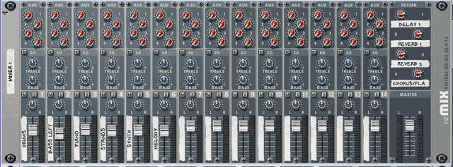

A mixer has a number of channels that accept audio inputs and combines them to produce a stereo output by routing and processing those signals in various ways. Each channel is usually laid out in a strip of controls that is replicated for each physical or virtual input. These controls typically include placement in the stereo image (pan), equalization controls that change the tone coloring of the signal, and effect routing controls.
As we've already seen, mixing consoles come in all shapes and sizes, from small 4 channel portable units to full-scale automated digital consoles that cost hundreds of thousands of dollars. For most desktop musicians, the mixer is the most important hardware component of the production process. All of our audio devices, instruments, audio recorders and processors will be connected to it, and as we'll see in the next lesson, all the audio signals in our system will be routed though it. It's the central nervous system of desktop production.
However,technology advances have allowed manufacturers to emulate very expensive mixers at very low cost. With the right digital audio interface for your computer, software-based mixing is truly an affordable option.
Just as with synthesizers and effects, the mixer in Reason is modeled after physical world hardware, in this case a typical mid-size mixer. The controls we have for volume panning, EQ and effects are visible on every channel as well and effect sends and returns that we'll use to process signals from the various Reason instruments.

The mixer in Reason